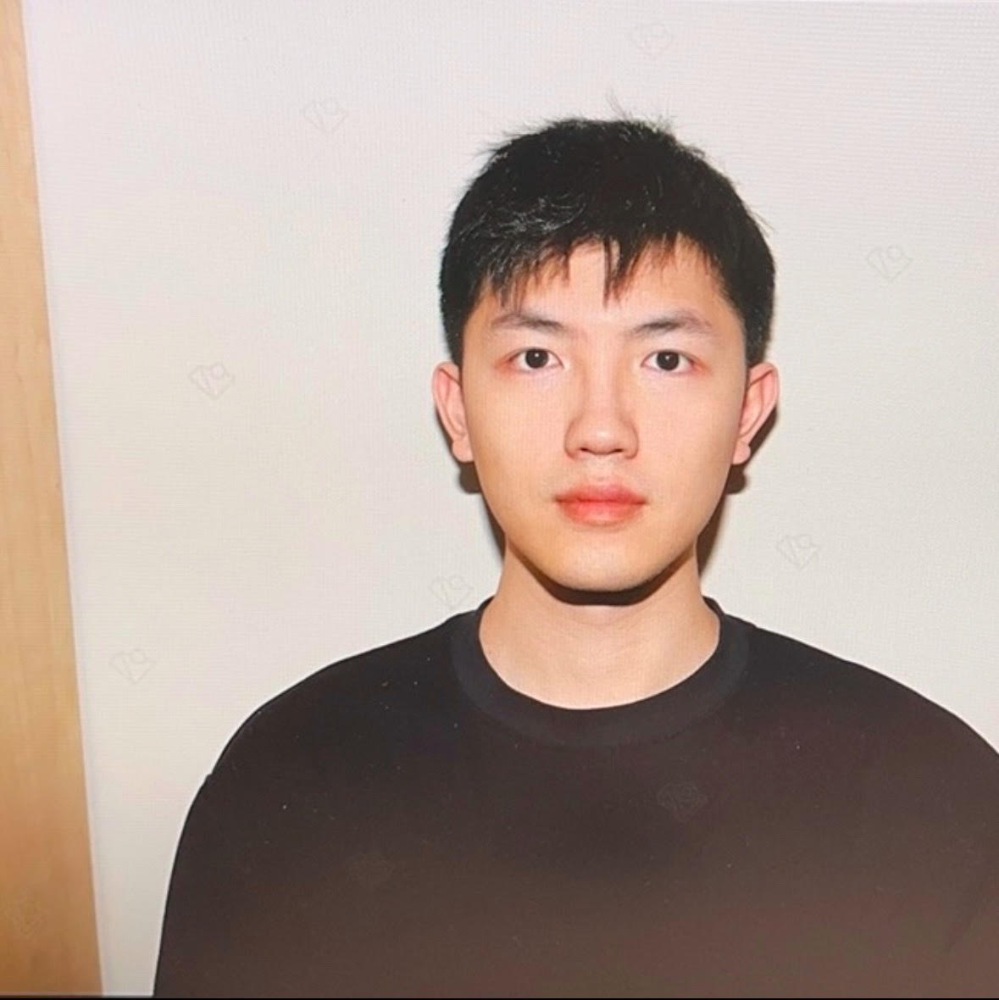

I am a PhD candidate in biomedical engineering at Johns Hopkins University, with a passion for medical imaging and AI applications in healthcare. I hold a BS in physics from Peking University and an MS in medical physics from Duke University. My research focuses on accurately representing image features and radiomics in CT systems to improve diagnostic and analytical capabilities.
About Me

Education
Ph.D., Biomedical Engineering
Johns Hopkins University, Baltimore, MD, USA
M.S. (2021), Medical Physics
Duke University, Durham, NC, USA
B.S. (2019), Physics
Peking University, Beijing, China
Experience
(Upcoming) Medical Imaging Intern
Intuitive, Sunnyvale, California, United States (On-site)
June 2025 - Sept 2025
Contact >
Working Email
yyuan57@jhu.edu
Personal Email
gyijie.yuan@gmail.com
Career
Social Media